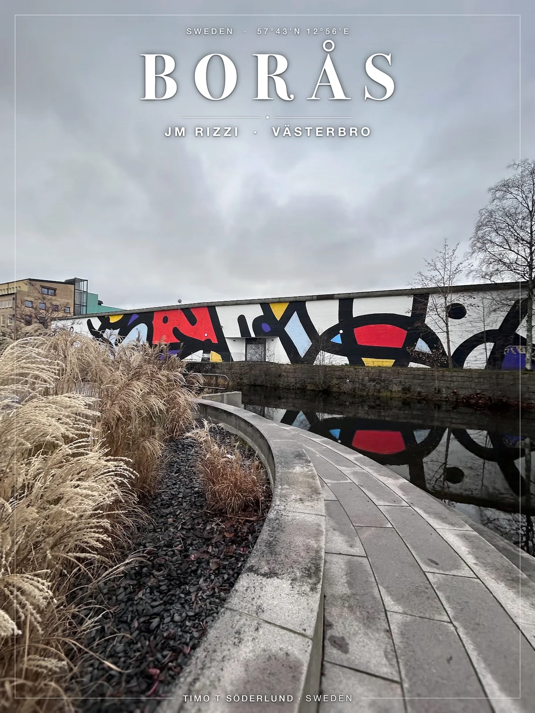

JM Rizzi · Västerbro
75-Meter Mural by JM Rizzi (2017) · No Limit Street Art, Borås, Sweden
English
Created in 2017 during Borås's renowned No Limit Street Art festival, American artist JM Rizzi's bold 75-meter abstract mural—his largest wall work at the time it was painted—runs alongside the Viskan river near Västerbro in Borås, Sweden. Curved stone steps and golden reeds frame its vivid reflection in the still water. Photographed by Timo T Söderlund for Borås Poster Project 2026 in Boras, Sweden.
Svenska
Skapad 2017 under konstfestivalen No Limit Street Art sträcker sig den amerikanske konstnären JM Rizzis 75 meter breda muralmålning — hans största muralmålning när den skapades — längs Viskan vid Västerbro i Borås. Svängda stentrappor och gyllene vass ramar in speglingen i det stilla vattnet. Fotograferad av Timo T. Söderlund för Borås Poster Project 2026.
Photographer & Edition: Timo T Söderlund · Borås, Sweden (2026)